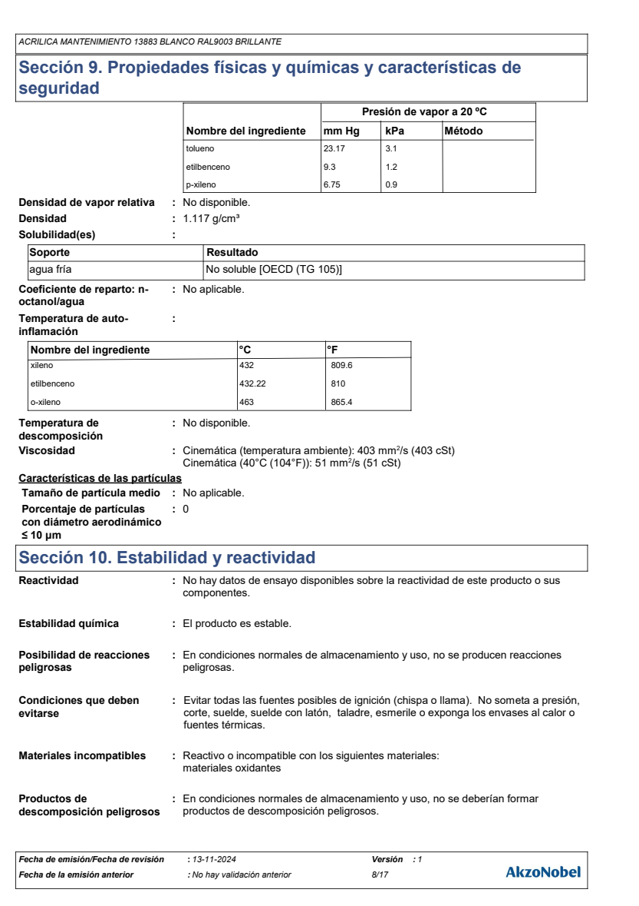
| Nombre del ingrediente | Presión de vapor a 20 ºC - mm Hg | Presión de vapor a 20 ºC - kPa | Presión de vapor a 20 ºC - Método |
|---|---|---|---|
| tolueno | 23.17 | 3.1 | |
| etilbenceno | 9.3 | 1.2 | |
| p-xileno | 6.75 | 0.9 |
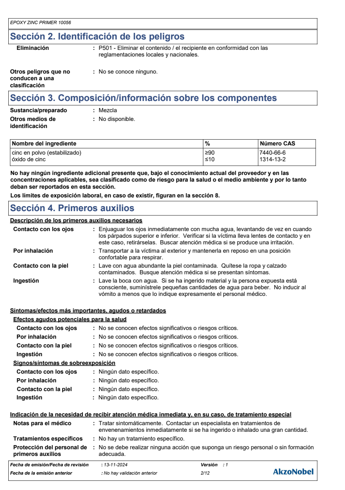
| Nombre del ingrediente | % | Número CAS |
|---|---|---|
| cinc en polvo (estabilizado) | ≥90 | 7440-66-6 |
| óxido de cinc | ≤10 | 1314-13-2 |
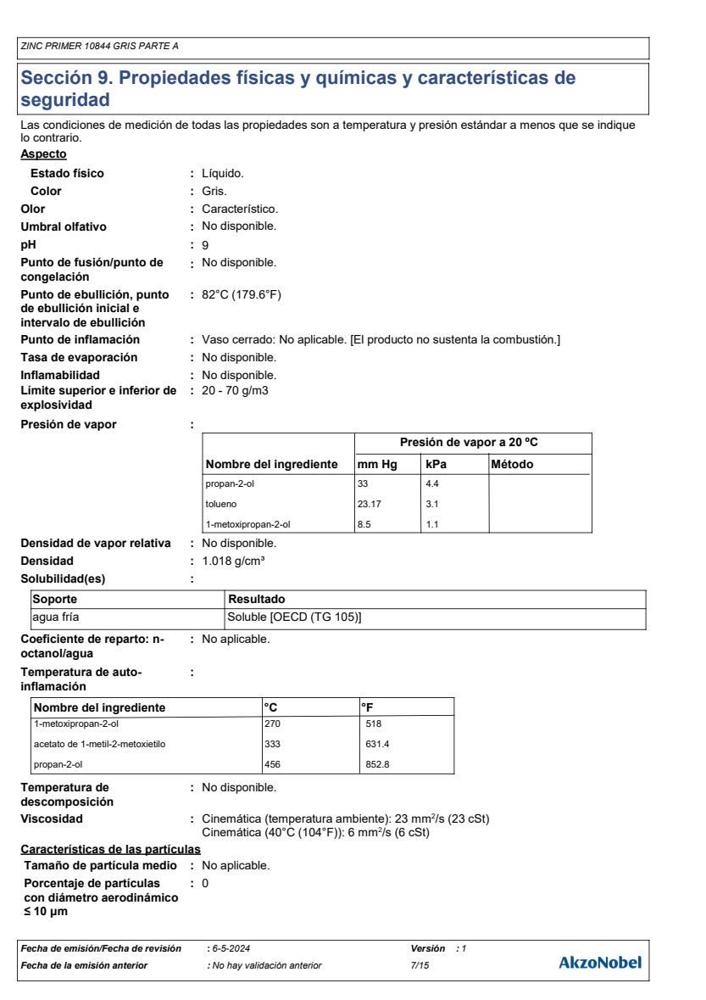
| Nombre del ingrediente | Presión de vapor a 20 ºC - mm Hg | Presión de vapor a 20 ºC - kPa | Presión de vapor a 20 ºC - Método |
|---|---|---|---|
| propan-2-ol | 33 | 4.4 | |
| tolueno | 23.17 | 3.1 | |
| 1-metoxipropan-2-ol | 8.5 | 1.1 |
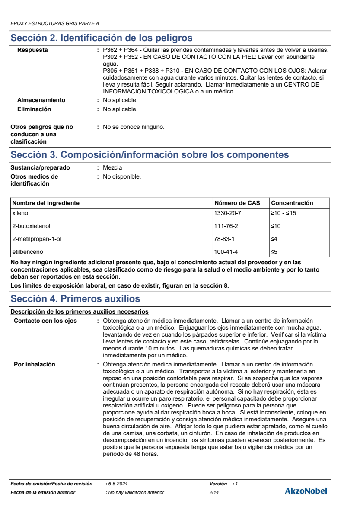
| Nombre del ingrediente | Número de CAS | Concentración |
|---|---|---|
| xileno | 1330-20-7 | ≥10 - ≤15 |
| 2-butoxietanol | 111-76-2 | ≤10 |
| 2-metilpropan-1-ol | 78-83-1 | ≤4 |
| etilbenceno | 100-41-4 | ≤5 |
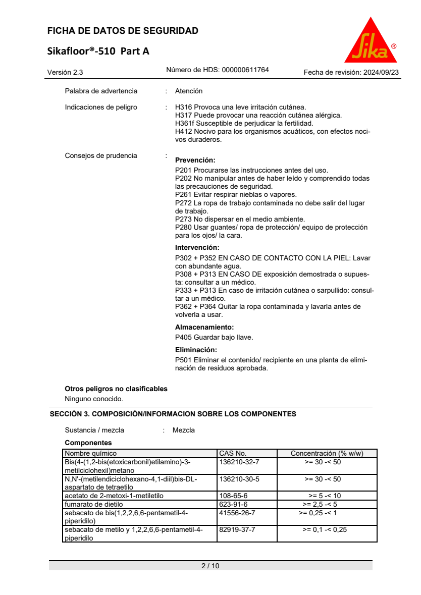
| Nombre químico | CAS No. | Concentración (% w/w) |
|---|---|---|
| Bis(4-(1,2-bis(etoxicarbonil)etilamino)-3- metilciclohexil)metano | 136210-32-7 | >= 30 - < 50 |
| N,N'-(metilendiciclohexano-4,1-diil)bis-DL- aspartato de tetraetilo | 136210-30-5 | >= 30 - < 50 |
| acetato de 2-metoxi-1-metiletilo | 108-65-6 | >= 5 - < 10 |
| fumarato de dietilo | 623-91-6 | >= 2,5 - < 5 |
| sebacato de bis(1,2,2,6,6-pentametil-4- piperidilo) | 41556-26-7 | >= 0,25 - < 1 |
| sebacato de metilo y 1,2,2,6,6-pentametil-4- piperidilo | 82919-37-7 | >= 0,1 - < 0,25 |
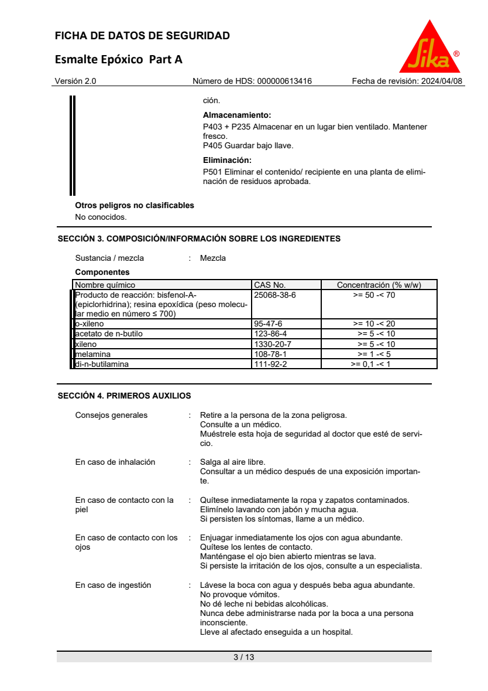
| Nombre químico | CAS No. | Concentración (% w/w) |
|---|---|---|
| Producto de reacción: bisfenol-A- (epiclorhidrina); resina epoxídica (peso molecu- lar medio en número ≤ 700) | 25068-38-6 | >= 50 - < 70 |
| o-xileno | 95-47-6 | >= 10 - < 20 |
| acetato de n-butilo | 123-86-4 | >= 5 - < 10 |
| xileno | 1330-20-7 | >= 5 - < 10 |
| melamina | 108-78-1 | >= 1 - < 5 |
| di-n-butilamina | 111-92-2 | >= 0,1 - < 1 |
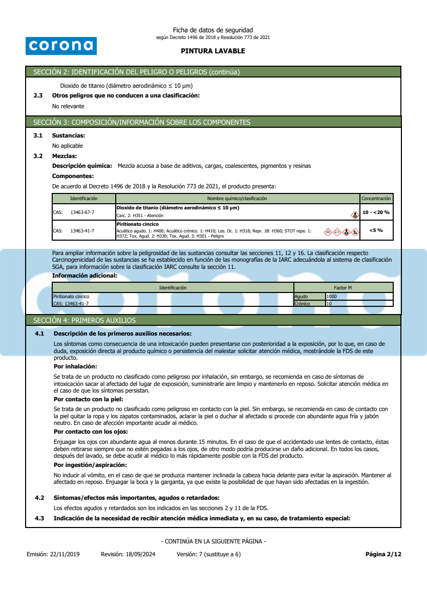
| Identificación | Identificación | Nombre químico/clasificación | Concentración |
|---|---|---|---|
| CAS: | 13463-67-7 | Dioxido de titanio (diámetro aerodinámico ≤ 10 μm) Carc. 2: H351 - Atención | 10 - <20 % |
| CAS: | 13463-41-7 | Piritionato cincico Acuático agudo. 1: H400; Acuático crónico. 1: H410; Les. Oc. 1: H318; Repr. 1B: H360; STOT repe. 1: H372; Tox. Agud. 2: H330; Tox. Agud. 3: H301 - Peligro | <5 % |
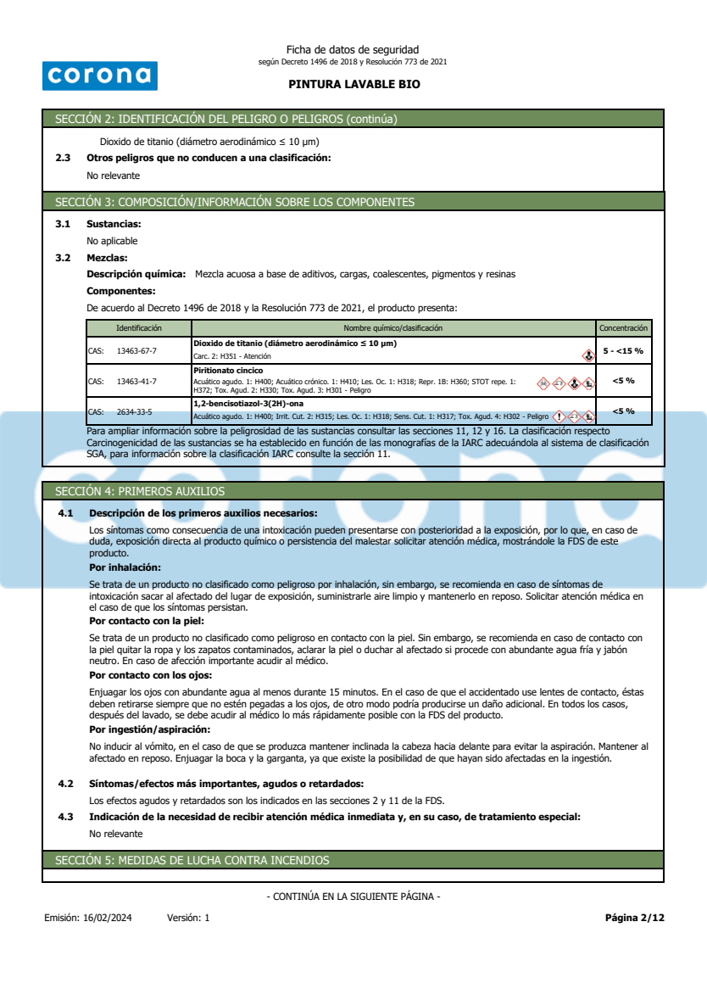
| Identificación | Identificación | Nombre químico/clasificación | Concentración |
|---|---|---|---|
| CAS: | 13463-67-7 | Dioxido de titanio (diámetro aerodinámico ≤ 10 μm) Carc. 2: H351 - Atención | 5 - <15 % |
| CAS: | 13463-41-7 | Piritionato cincico Acuático agudo. 1: H400; Acuático crónico. 1: H410; Les. Oc. 1: H318; Repr. 1B: H360; STOT repe. 1: H372; Tox. Agud. 2: H330; Tox. Agud. 3: H301 - Peligro 新 | <5 % |
| CAS: | 2634-33-5 | 1,2-bencisotiazol-3(2H)-ona Acuático agudo. 1: H400; Irrit. Cut. 2: H315; Les. Oc. 1: H318; Sens. Cut. 1: H317; Tox. Agud. 4: H302 - Peligro 日 | <5 % |
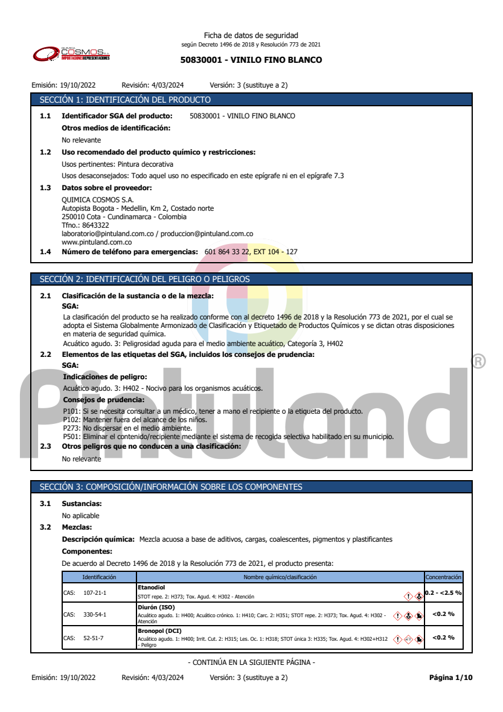
| Identificación | Identificación | Nombre químico/clasificación | Concentración |
|---|---|---|---|
| CAS: | 107-21-1 | Etanodiol STOT repe. 2: H373; Tox. Agud. 4: H302 - Atención | 0.2 - <2.5 % |
| CAS: | 330-54-1 | Diurón (ISO) Acuático agudo. 1: H400; Acuático crónico. 1: H410; Carc. 2: H351; STOT repe. 2: H373; Tox. Agud. 4: H302 - Atención | <0.2 % |
| CAS: | 52-51-7 | Bronopol (DCI) Acuático agudo. 1: H400; Irrit. Cut. 2: H315; Les. Oc. 1: H318; STOT única 3: H335; Tox. Agud. 4: H302+H312 - Peligro | <0.2 % |
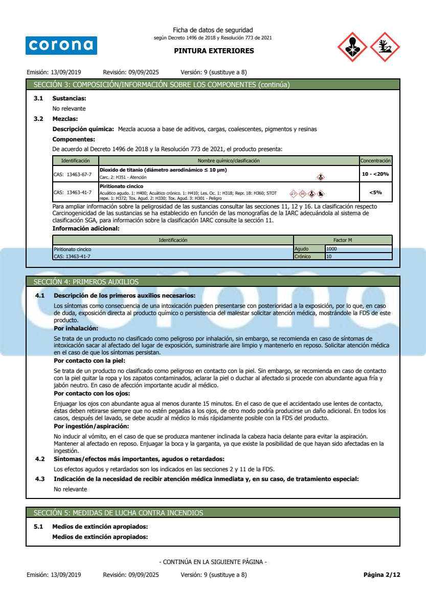
| Identificación | Nombre químico/clasificación | Nombre químico/clasificación | Concentración |
|---|---|---|---|
| CAS: 13463-67-7 | Dioxido de titanio (diámetro aerodinámico ≤ 10 μm) Carc. 2: H351 - Atención | 10 - <20% | |
| CAS: 13463-41-7 | Piritionato cincico Acuático agudo. 1: H400; Acuático crónico. 1: H410; Les. Oc. 1: H318; Repr. 1B: H360; STOT repe. 1: H372; Tox. Agud. 2: H330; Tox. Agud. 3: H301 - Peligro | 新 | <5% |
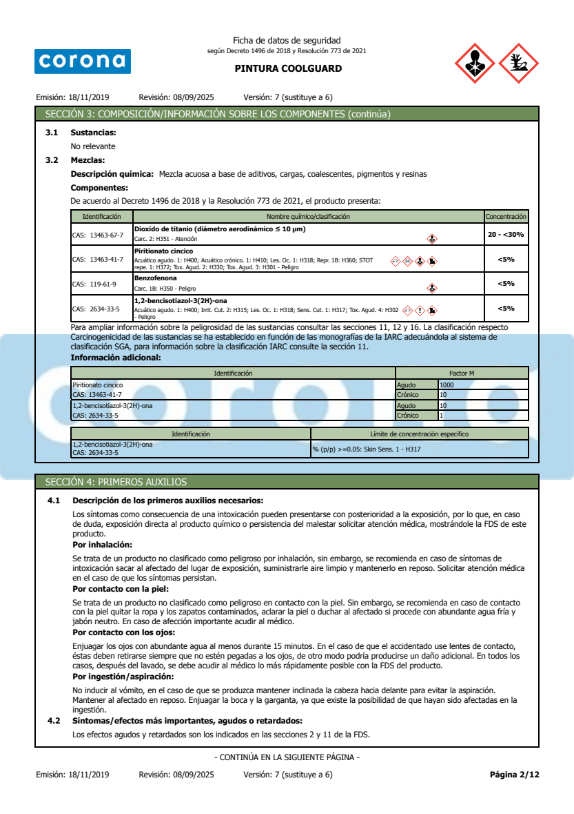
| Identificación | Nombre químico/clasificación | Concentración |
|---|---|---|
| CAS: 13463-67-7 | Dioxido de titanio (diámetro aerodinámico ≤ 10 μm) Carc. 2: H351 - Atención | 20 - <30% |
| CAS: 13463-41-7 | Piritionato cincico Acuático agudo. 1: H400; Acuático crónico. 1: H410; Les. Oc. 1: H318; Repr. 1B: H360; STOT repe. 1: H372; Tox. Agud. 2: H330; Tox. Agud. 3: H301 - Peligro | <5% |
| CAS: 119-61-9 | Benzofenona Carc. 1B: H350 - Peligro | <5% |
| CAS: 2634-33-5 | 1,2-bencisotiazol-3(2H)-ona Acuático agudo. 1: H400; Irrit. Cut. 2: H315; Les. Oc. 1: H318; Sens. Cut. 1: H317; Tox. Agud. 4: H302 - Peligro | <5% |
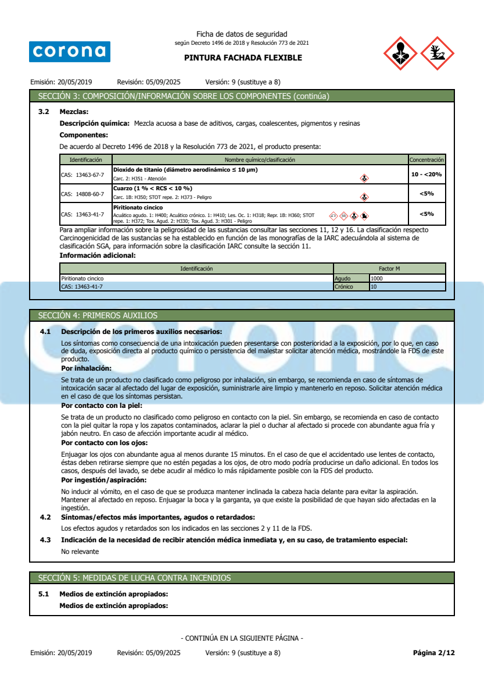
| Identificación | Nombre químico/clasificación | Concentración |
|---|---|---|
| CAS: 13463-67-7 | Dioxido de titanio (diámetro aerodinámico ≤ 10 μm) Carc. 2: H351 - Atención | 10 - <20% |
| CAS: 14808-60-7 | Cuarzo (1 % < RCS < 10 %) Carc. 1B: H350; STOT repe. 2: H373 - Peligro | <5% |
| CAS: 13463-41-7 | Piritionato cincico Acuático agudo. 1: H400; Acuático crónico. 1: H410; Les. Oc. 1: H318; Repr. 1B: H360; STOT repe. 1: H372; Tox. Agud. 2: H330; Tox. Agud. 3: H301 - Peligro | <5% |
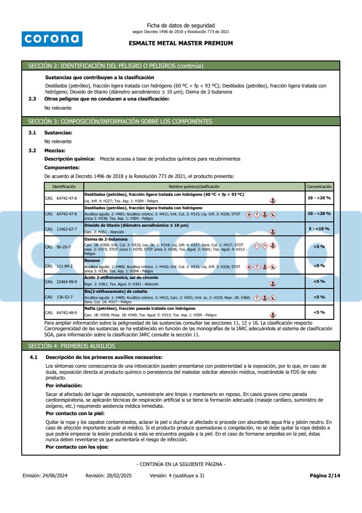
| Identificación | Identificación | Nombre químico/clasificación | Concentración |
|---|---|---|---|
| CAS: | 64742-47-8 Destilados (petróleo), fracción ligera Liq. Infl. 4: H227; Tox. Asp. 1: H304 - Peligro | tratada con hidrógeno (60 ºC < fp < 93 ºC) | 10 - <20 % |
| CAS: | 64742-47-8 | Destilados (petróleo), fracción ligera tratada con hidrógeno Acuático agudo. 2: H401; Acuático crónico. 2: H411; Irrit. Cut. 2: H315; Liq. Infl. 3: H226; STOT única 3: H336; Tox. Asp. 1: H304 - Peligro 日 | 10 - <20 % |
| CAS: | 13463-67-7 Dioxido de titanio (diámetro aerodinámico Carc. 2: H351 - Atención | ≤ 10 μm) | 5 - <10 % |
| CAS: | 96-29-7 Oxima de 2-butanona Carc. 1B: H350; Irrit. Cut. 2: H315; Les. Oc. 1: repe. 2: H373; STOT única 1: H370; STOT única Peligro | H318; Liq. Infl. 4: H227; Sens. Cut. 1: H317; STOT 3: H336; Tox. Agud. 3: H301; Tox. Agud. 4: H312 - | <5 % |
| CAS: | 111-84-2 Nonano Acuático agudo. 1: H400; Acuático crónico. 1: H410; Irrit. Cut. 2: H315; Liq. Infl. 3: H226; STOT única 3: H336; Tox. Asp. 1: H304 - Peligro | 日 | <5 % |
| CAS: | 22464-99-9 Ácido 2-etilhexanoico, sal de circonio Repr. 2: H361; Tox. Agud. 5: H303 - Atención | <5 % | |
| CAS: | 136-52-7 | Bis(2-etilhexanoato) de cobalto Acuático agudo. 1: H400; Acuático crónico. 3: H412; Carc. 2: H351; Irrit. oc. 2: H319; Repr. 1B: H360; Sens. Cut. 1A: H317 - Peligro 日 4 | <5 % |
| CAS: | 64742-48-9 Nafta Carc. | (petróleo), fracción pesada tratada con hidrógeno 1B: H350; Muta. 1B: H340; Tox. Agud. 5: H313; Tox. Asp. 1: H304 - Peligro | <5 % |
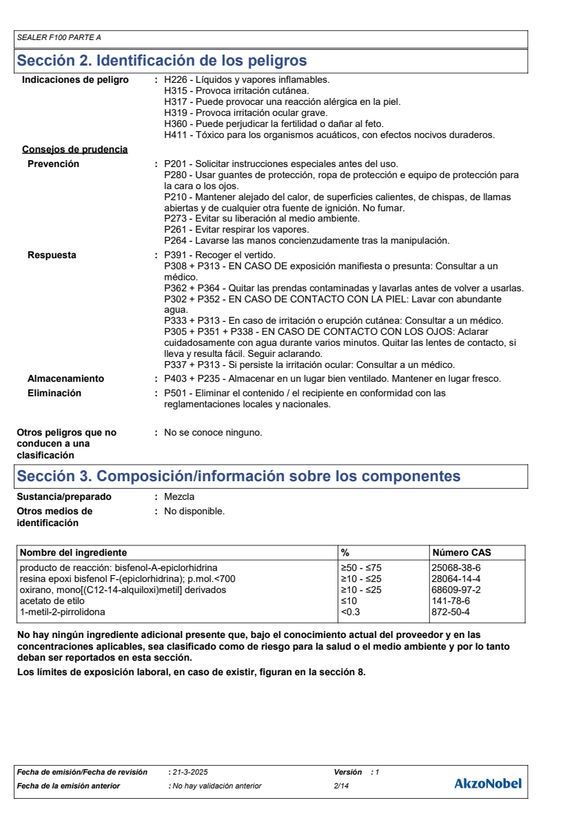
| Nombre del ingrediente | % | Número CAS |
|---|---|---|
| producto de reacción: bisfenol-A-epiclorhidrina | ≥50 - ≤75 | 25068-38-6 |
| resina epoxi bisfenol F-(epiclorhidrina); p.mol.<700 | ≥10 - ≤25 | 28064-14-4 |
| oxirano, mono[(C12-14-alquiloxi)metil] derivados | ≥10 - ≤25 | 68609-97-2 |
| acetato de etilo | ≤10 | 141-78-6 |
| 1-metil-2-pirrolidona | <0.3 | 872-50-4 |
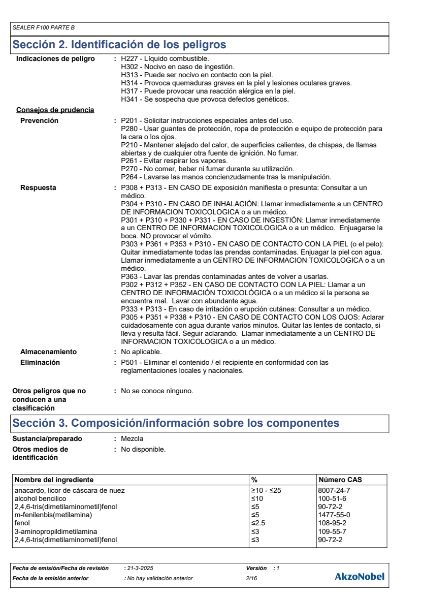
| Nombre del ingrediente | % | Número CAS |
|---|---|---|
| anacardo, licor de cáscara de nuez | ≥10 - ≤25 | 8007-24-7 |
| alcohol bencilico | ≤10 | 100-51-6 |
| 2,4,6-tris(dimetilaminometil)fenol | ≤5 | 90-72-2 |
| m-fenilenbis(metilamina) | ≤5 | 1477-55-0 |
| fenol | ≤2.5 | 108-95-2 |
| 3-aminopropildimetilamina | ≤3 | 109-55-7 |
| 2,4,6-tris(dimetilaminometil)fenol | ≤3 | 90-72-2 |
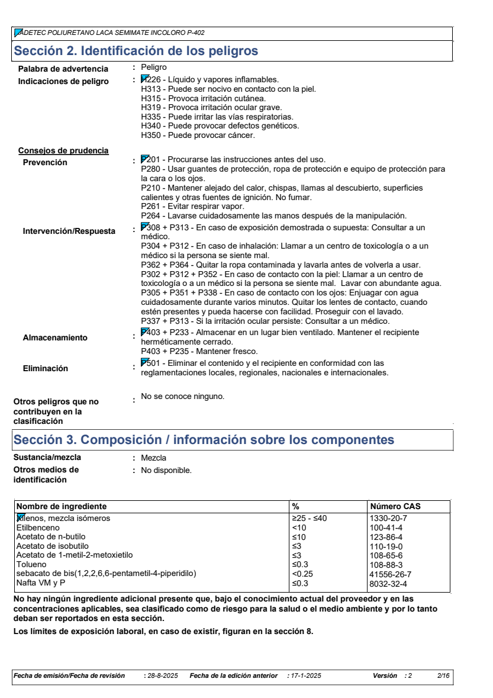
| Nombre de ingrediente | % | Número CAS |
|---|---|---|
| Xilenos, mezcla isómeros Etilbenceno Acetato de n-butilo Acetato de isobutilo Acetato de 1-metil-2-metoxietilo Tolueno sebacato de Nafta VM y P | ≥25 - ≤40 | 1330-20-7 |
| <10 | 100-41-4 | |
| ≤10 | 123-86-4 | |
| ≤3 | 110-19-0 | |
| ≤3 | 108-65-6 | |
| ≤0.3 | 108-88-3 | |
| bis(1,2,2,6,6-pentametil-4-piperidilo) | <0.25 | 41556-26-7 |
| ≤0.3 | 8032-32-4 |
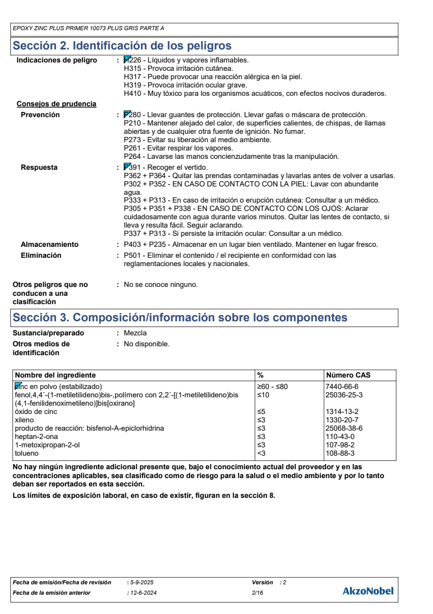
| Nombre del ingrediente | % | Número CAS |
|---|---|---|
| cinc en polvo (estabilizado) | ≥60 - ≤80 | 7440-66-6 |
| fenol,4,4´-(1-metiletilideno)bis-,polímero con 2,2´-[(1-metiletilideno)bis (4,1-fenilidenoximetileno)]bis[oxirano] | ≤10 | 25036-25-3 |
| óxido de cinc | ≤5 | 1314-13-2 |
| xileno | ≤3 | 1330-20-7 |
| producto de reacción: bisfenol-A-epiclorhidrina | ≤3 | 25068-38-6 |
| heptan-2-ona | ≤3 | 110-43-0 |
| 1-metoxipropan-2-ol | ≤3 | 107-98-2 |
| tolueno | <3 | 108-88-3 |
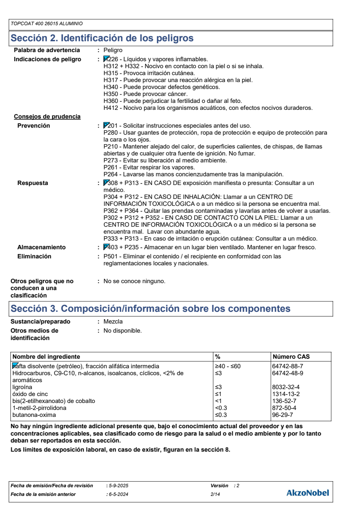
| Nombre del ingrediente | % | Número CAS |
|---|---|---|
| nafta disolvente (petróleo), fracción alifática intermedia | ≥40 - ≤60 | 64742-88-7 |
| Hidrocarburos, C9-C10, n-alcanos, isoalcanos, cíclicos, <2% de aromáticos | ≤3 | 64742-48-9 |
| ligroína | ≤3 | 8032-32-4 |
| óxido de cinc | ≤1 | 1314-13-2 |
| bis(2-etilhexanoato) de cobalto | <1 | 136-52-7 |
| 1-metil-2-pirrolidona | <0.3 | 872-50-4 |
| butanona-oxima | ≤0.3 | 96-29-7 |
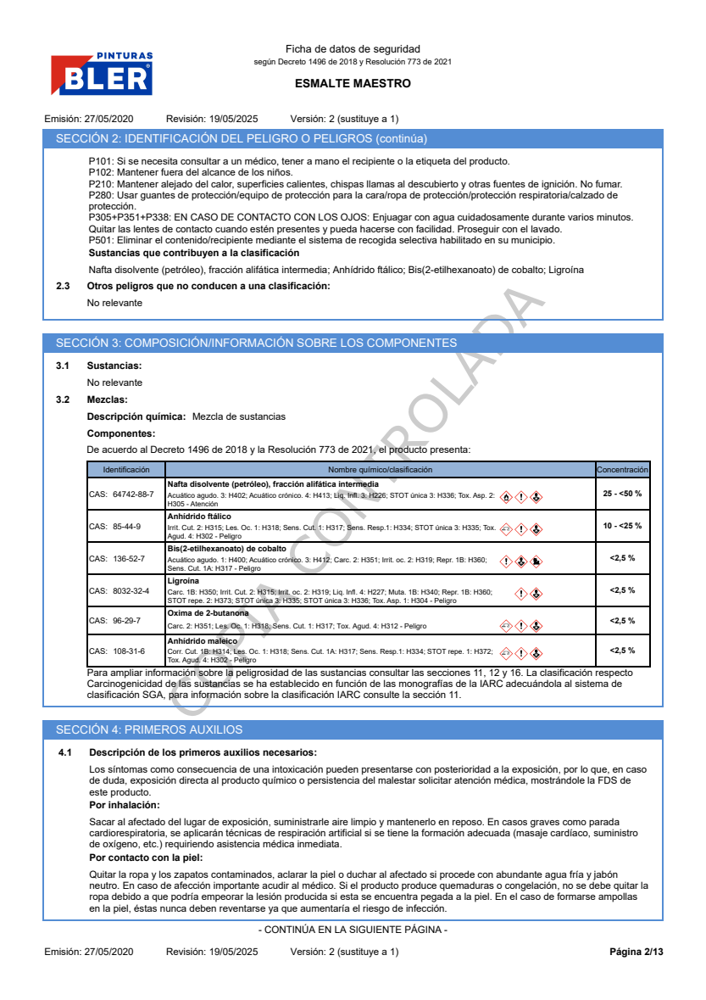
| Identificación | Identificación | Nombre químico/clasificación | Concentración |
|---|---|---|---|
| CAS: | 64742-88-7 | Nafta disolvente (petróleo), fracción alifática intermedia Acuático agudo. 3: H402; Acuático crónico. 4: H413; Liq. Infl. 3: H226; STOT única 3: H336; Tox. Asp. 2: H305 - Atención | 25 - <50 % |
| CAS: | 85-44-9 | Anhídrido ftálico Irrit. Cut. 2: H315; Les. Oc. 1: H318; Sens. Cut. 1: H317; Sens. Resp.1: H334; STOT única 3: H335; Tox. Agud. 4: H302 - Peligro | 10 - <25 % |
| CAS: | 136-52-7 | Bis(2-etilhexanoato) de cobalto Acuático agudo. 1: H400; Acuático crónico. 3: H412; Carc. 2: H351; Irrit. oc. 2: H319; Repr. 1B: H360; Sens. Cut. 1A: H317 - Peligro | <2,5 % |
| CAS: | 8032-32-4 | Ligroína Carc. 1B: H350; Irrit. Cut. 2: H315; Irrit. oc. 2: H319; Liq. Infl. 4: H227; Muta. 1B: H340; Repr. 1B: H360; STOT repe. 2: H373; STOT única 3: H335; STOT única 3: H336; Tox. Asp. 1: H304 - Peligro | <2,5 % |
| CAS: | 96-29-7 | Oxima de 2-butanona Carc. 2: H351; Les. Oc. 1: H318; Sens. Cut. 1: H317; Tox. Agud. 4: H312 - Peligro | <2,5 % |
| CAS: | 108-31-6 | Anhídrido maleico Corr. Cut. 1B: H314; Les. Oc. 1: H318; Sens. Cut. 1A: H317; Sens. Resp.1: H334; STOT repe. 1: H372; Tox. Agud. 4: H302 - Peligro | <2,5 % |
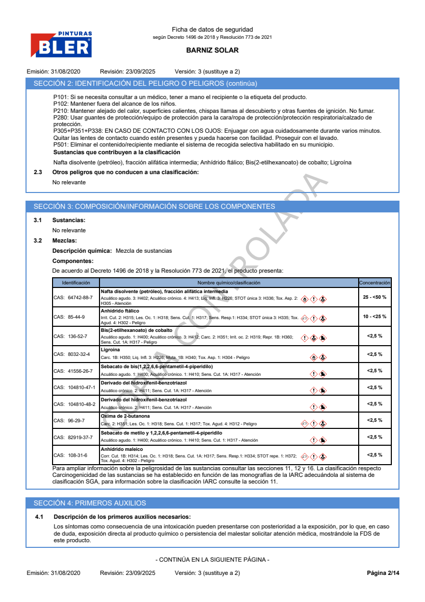
| Identificación | Identificación | Nombre químico/clasificación | Concentración |
|---|---|---|---|
| CAS: | 64742-88-7 | Nafta disolvente (petróleo), fracción alifática intermedia Acuático agudo. 3: H402; Acuático crónico. 4: H413; Liq. Infl. 3: H226; STOT única 3: H336; Tox. Asp. 2: H305 - Atención | 25 - <50 % |
| CAS: | 85-44-9 | Anhídrido ftálico Irrit. Cut. 2: H315; Les. Oc. 1: H318; Sens. Cut. 1: H317; Sens. Resp.1: H334; STOT única 3: H335; Tox. Agud. 4: H302 - Peligro | 10 - <25 % |
| CAS: | 136-52-7 | Bis(2-etilhexanoato) de cobalto Acuático agudo. 1: H400; Acuático crónico. 3: H412; Carc. 2: H351; Irrit. oc. 2: H319; Repr. 1B: H360; Sens. Cut. 1A: H317 - Peligro | <2,5 % |
| CAS: | 8032-32-4 | Ligroína Carc. 1B: H350; Liq. Infl. 3: H226; Muta. 1B: H340; Tox. Asp. 1: H304 - Peligro | <2,5 % |
| CAS: | 41556-26-7 | Sebacato de bis(1,2,2,6,6-pentametil-4-piperidilo) Acuático agudo. 1: H400; Acuático crónico. 1: H410; Sens. Cut. 1A: H317 - Atención | <2,5 % |
| CAS: | 104810-47-1 | Acuático crónico. 2: H411; Sens. Cut. 1A: H317 - Atención | <2,5 % |
| CAS: | 104810-48-2 | Derivado del hidroxifenil-benzotriazol Acuático crónico. 2: H411; Sens. Cut. 1A: H317 - Atención | <2,5 % |
| CAS: | 96-29-7 | COPIA Derivado del hidroxifenil-benzotriazol Oxima de 2-butanona Carc. 2: H351; Les. Oc. 1: H318; Sens. Cut. 1: H317; Tox. Agud. 4: H312 - Peligro | <2,5 % |
| CAS: | 82919-37-7 | Sebacato de metilo y 1,2,2,6,6-pentametil-4-piperidilo Acuático agudo. 1: H400; Acuático crónico. 1: H410; Sens. Cut. 1: H317 - Atención | <2,5 % |
| CAS: | 108-31-6 | Anhídrido maleico Corr. Cut. 1B: H314; Les. Oc. 1: H318; Sens. Cut. 1A: H317; Sens. Resp.1: H334; STOT repe. 1: H372; Tox. Agud. 4: H302 - Peligro | <2,5 % |